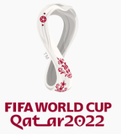
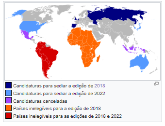
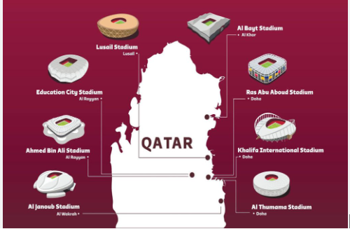

COPA DO MUNDO de 2022
historia da copa do mundo de 2022
a vigesima segunda edicao da copa do mundo FIFA foi realizada no Oriente Medio e foi a ultima a ter o formato de 32 selecoes e foram escolhidas cerca de 7 cidades para sediar o mundial e devido as altas temperaturas no verao do pais-sede a competicao foi transferida para o final do ano sendo disputada entre 20 de novembro e 18 de dezembro.uma grande polemica do mundial foi as grandes acusacoes de corrupcao na hora de escolha do pais para sediar o mundial mas os promotores suicos julgaram o caso em 2015 absolvendo o pais das acusacoes.Outra polemica envolvendo os anfitrioes foram as acusacoes da anistia internacional sobre as pessimas condicoes semelhante a escravidao dos trabalhaodres responsaveis pela construcao do evento.
candidatura e processo de escolha
o Catar apresentou sua candidatura para sediar a competicao apenas para 2022 ja que na epoca em que foram feita as escolhas o pais-sede da copa de 2018 foi feita na mesma eleicao.Oprocesso se iniciou em janeiro de 2009 .Alem do Catar ,a Australia,os Estados Unidos,a Coreia do sul e o Japao se candidataram para sediar o evento e a vitoria do pais do oriente medio representou riscos em diversas midias do mundo devido as proprias acusacoes de corrupcao no processo seletivo de escolha da sede.
sedes da competicao
As 5 primeiras sedes propostas para a edicao foram reveladas em 2010. A ideia e que os estadios reflitam os aspectos historicos e culturais do Catar, e cada estadio visa incorporar legado, conforto, acessibilidade e sustentabilidade. O Catar pretende construir estadios com os mais altos padroes ambientais e de sustentabilidade, que foram equipados com sistemas de refrigeracao ecologicamente corretos, buscando reduzir as temperaturas dentro do estádio em ate 20°C . O objetivo e construir estadios usando materiais ecologicos, equipamentos inofensivos e solucoes ecologicamente sustentáveimeio da implementacao de solucoes renovaveis de baixo consumo de energia, alem de que as camadas superiores dos estadios foram desmontadas apos a Copa do Mundo e doadas a países com infraestrutura esportiva menos desenvolvida. O Catar busca ser compativel e certificado pelo Global Sustainability Assessment System (GSAS) em todos os estadios do torneio. Todos os cinco projetos de estadios lancados foram projetados pelo escritório de arquitetura alemao Albert Speer & Partners. Um relatório divulgado citou o presidente da FIFA, Joseph Blatter, afirmando que outros paises poderiam sediar alguns jogos da Copa do Mundo. No entanto, nenhum pais especifico foi nomeado no relatório. Blatter acrescentou que qualquer decisão desse tipo deve ser tomada primeiro pelo Catar e depois endossada pelo comitê executivo da FIFA. O príncipe Ali bin Al-Hussein da Jordânia disse a Australian Associated Press que realizar jogos no Bahrein, Emirados Arabes Unidos e na Arabia Saudita ajudaria a integrar o povo da regiao durante o torneio.Em janeiro de 2019, o presidente da FIFA Gianni Infantino divulgou um relatorio preliminar com as oito sedes já confirmadas para o evento, ressaltando a possibilidade de aumento ou diminuicao deste número.Em 21 de novembro de 2022 foi divulgado pela FIFA a capacidade dos oito estádios sedes As atrações musicais ficaram por conta do cantor Jeon Jung-kook da banda sul-coreana de K-Pop BTS e do cantor catari Fahad Al Kubaisi, que também é embaixador da Copa. A cantora Dua Lipa que estava sendo especulada para se apresentar no evento negou seu envolvimento "em qualquer negociação a ser realizada", denunciando o Catar por suas violações de direitos humanos. Antes do encerramento, houve mais um discurso, do Emir do Catar Tamim bin Hamad al-Thani, que em meio às críticas sobre o país desde a escolha para ser sede da Copa do Mundo sobre respeito as mulheres, pessoas LGBT e migrantes que trabalharam para o evento disse que "Recebemos a todos de braços abertos na Copa do Mundo 2022. Nós trabalhamos e fizemos muitos esforços para garantir o sucesso desta edição."
Cerimonia de abertura
A cerimonia de abertura ocorreu no dia 20 de dezembro no estadio no estádio Al Bayt (Al Khor) e ocorreu antes da abertura entre o pais anfitria e o equador poucos momentos depois que havia sido antecipado pela FIFA meses antes Depois de danças e camelos vivos numa linda apresentação, o ator Morgan Freeman e o influenciador Ghanim Al Muftah fizeram um discurso sobre a inclusão em meios as criticas sobre desrespeito aos direitos humanos no Catar.Tambem outros mascotes de outras edicoes foram lembrados.O último a aparecer foi o mascote desta edicao: o La eeb, que possui formato dos tradicionais lenços arabes e, seu nome significa "jogador super habilidoso".As atracoes musicais ficaram por conta do cantor Jeon Jung-kook da banda sul-coreana de K-Pop BTS e do cantor catari Fahad Al Kubaisi, que também é embaixador da Copa. A cantora Dua Lipa que estava sendo especulada para se apresentar no evento negou seu envolvimento "em qualquer negociação a ser realizada", denunciando o Catar por suas violações de direitos humanos. Antes do encerramento, houve mais um discurso, do Emir do Catar Tamim bin Hamad al-Thani, que em meio às críticas sobre o pais desde a escolha para ser sede da Copa do Mundo sobre respeito as mulheres, pessoas LGBT e migrantes que trabalharam para o evento disse que "Recebemos a todos de braços abertos na Copa do Mundo 2022. Nos trabalhamos e fizemos muitos esforcos para garantir o sucesso desta edicao
partida e o andamento do torneio
Nessa competicao teve varios destaques e zebras na competicao como a derrota da estreia argentina no mundial para
a arabia saudita e a derrota brasileira para a selecao de Camaroes ,outras surpresas que ocorreu na competicao
foi a eliminacao precoce de grandes selecoes do
cenario mundial ainda na fase de grupos como ocorreu com a Alemanha,Belgica,uruguai e o mexico onde nesses
grupos muitas dessas selecoes foram eliminadas no saldo de gols.A grande zebra da competicao que contrariou
todos os prognosticos do torneio foi a selecao marroquina que conseguiu se classificar em primeiro em um grupo
que parecia que o eliminaria facil e mais tarde no mata-mata veio a eliminar grandes selecoes como Espanha e
Portugal.Afranca e a Inglaterra fez uma das melhores campanhas durante o torneio e protagonizaram um dos maiores
classicos da competicao vencida pelos franceses onde o grande craque ingles HenryKane desperdicou um penalti que
custou a permanencia da selecao no mundial.Um lance mutio polemico ocorreu no jogo entre Japao e Espanha onde um
gol japones foi validado com o auxilio do VAR por questao milimetrica de uma bola que possilvelmente teria saido
antes do cruzamento para o gol.A selecao brasileira teve uma participacao jogando muito bem contra a Servia e a
Coreia do sul com destaque de richarlison e Neymar que foram os grandes destques nos momentos positivos do
Brasil,a selecao canarinho sofreu contra a Suica mas venceu e jogando com o time reserva e tendo pouca
eviciencia na finalizacao foi derrotada por Camaroes e em um jogo em que O brasil atacou a selecao Croata e
conseguiu abrir o placar acabou cedendo um empate na falha da zaga e perdendo nos penaltis para a selecao
Croata.Um dos grandes destques foi uma possivel despedida do grande craque portugues Cristiano Ronaldo em que
disputou sua quinta copa consecutiva se tornando um dos grandes destques da historia da nacao.O torneio contou
com uma das finais da competicao mais acirradas do torneio entre a Argentina e Franca que acabou sendo decidida
nos penaltis e dando o titulo para a selecao Argentina que conquistou seu tri campeonato mundial.